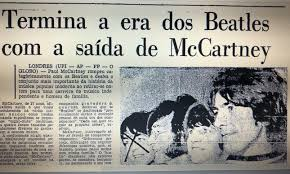

Fim do grupo
John Lennon, Paul McCartney, George Harrison e Ringo Starr começaram a tocar juntos como banda em 1962. A separação de The Beatles foi um processo cumulativo marcado por rumores e comentários ambíguos de seus membros no que dizia respeito ao próprio futuro enquanto integrantes da banda. Em setembro de 1969, Lennon reservadamente informou a seus companheiros de banda que ele estava deixando o grupo. No entanto, não houve conhecimento público do fato até 10 de abril de 1970, quando McCartney anunciou que também estava deixando o grupo.
Houve numerosas causas para a separação da banda, inclusive o abandono das turnês em 1966 e a morte do empresário Brian Epstein em 1967.[1] Conflitos também surgiram das diferenças na visão artística dos integrantes.[2] Tanto Harrison quanto Starr temporariamente deixaram o grupo algumas vezes durante 1968 e 1969; em 1970 todos os quatro membros haviam começado a trabalhar em projetos-solo após terem percebido que o grupo não se reuniria mais. Por fim, a animosidade crescente tornou impossível que o grupo continuasse a trabalhar junto.[3] anos seguintes, houve parcerias e trabalhos esporádicos de gravação entre os membros do grupo, mas jamais com os quatro ex-Beatles colaborando simultaneamente em uma gravação ou em um concerto novamente. Após a morte de Lennon em 1980, os três membros remanescentes reuniram-se para o projeto Anthology em 1994, usando duas demos deixadas por Lennon – "Free as a Bird" e "Real Love" – como base para novas canções gravadas e lançadas como The Beatles.[4]
Ultimas fotos do grupo junto